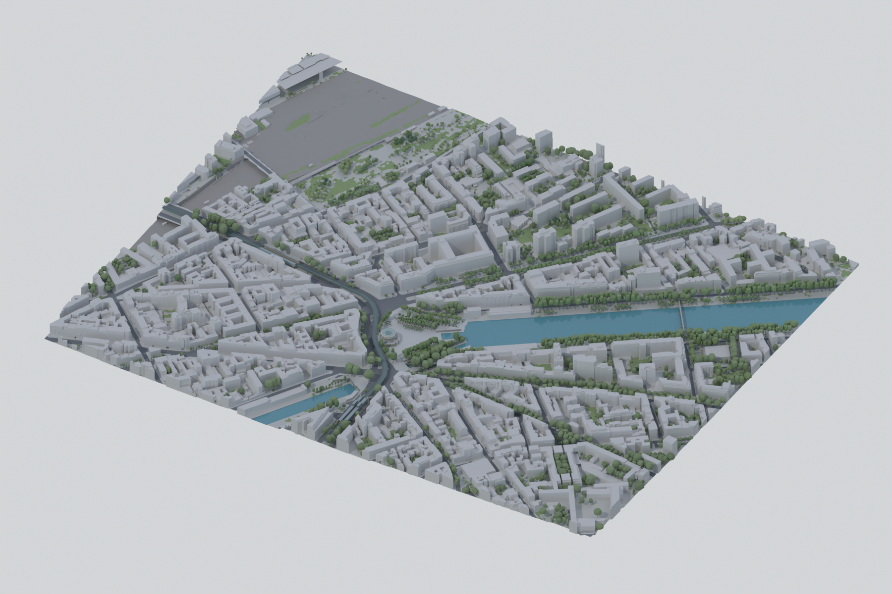

Une maquette à parcourir,
du territoire à l’architecture.

Façades CRAMIF : relevé à compléter.
Les volumes suivent les emprises et les hauteurs des sources du projet. Les hauteurs issues du LiDAR et les cotes documentaires sont distinguées dans les rapports. Les détails de façade restent à relever : aucune fenêtre ni texture de sol n’est ajoutée ici.
La végétation et l’eau sont représentées pour la lecture du site. Leurs matières sont des conventions de rendu. Le terrain qui prolonge le secteur est une convention visuelle.
La vue recharge les livrables enregistrés par étapes. Elle ne suit pas les opérations du fichier natif en continu.